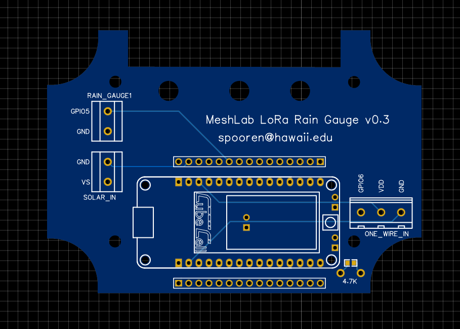

Printed Circuit Board
This section briefly describes the PCBs designed within this project. While breadboards are often used for prototyping with microcontroller, real deployments should use custom PCBs since they offer a more reliable setup.
The project scope required a rain gauge sensor as well as a temperature sensor to transmit measurements over LoRaWAN to a online database. With the below described PCB it is possible to attach a Heltec HTCC-AB02 as well as the two sensors within minutes.
Rain Box PCB

As mentioned above the two values temperature and rain fall were to be
collected and send to an online database. First prototypes using a breadboard
and a Heltec HTCC-AB02 worked out as expected, so the same exact circuit was
transfered in a PCB. On the right side a picture of the PCB is shown. The labels
RAIN_GAUGE, SOLAR_IN and ONE_WIRE_IN contain screw terminals which allow
easy attaching of the sensor cables.
An EasyEda project file is available here for customization or ordering online.
Additionally the BOM, Gerber and Pick & Place files are available:
- BOM_PCB_rain-box_htcc-ab02.csv
- Gerber_PCB_rain-box_htcc-ab02.zip
- PickAndPlace_PCB_rain-box_htcc-ab02.csv
The PCB has a custom cutting so it fits perfectly into the outdoor case
PTK-18420-C by Bud Industries, Inc.. It is important to order the C
version since a clear cover is required to allow solar charging. Using cable
glands it's possible to connect external sensors. The picture below shows two
possible positions for 7mm holes to attach PG7 cable glands. Silicon was
added around the cable glands for better long term water resistance.

The full box specifications are available on the vendors website or as an attached resource.
It is possible to use the Pick and Place file to
order all parts soldered on or solder all components manually. In that case a
4.7K resistor should be added on the bottom left instead of a flat resistor.
A picture of an assembled Rain Box is shown below. The picture shows four different setups of the rain gauges.
- The left box has a HOBO RG3 rain gauge
- The middle box has only a [DS18B20 temperature sensor] is connected inside the box. This was done to measure the maximum daily temperature inside the box.
- The right box has both a temperature sensor and a MISOL rain guage attached. By the time of writing (2021-09-16) the official vendor website is unreachable.
- In front is a PCB board without a box showing a connected Heltec HTCC-AB02.

PCB Editor
To design PCBs a variety of tools is available for free. However the number of tools that are available on the three main platforms Windows, MacOSX and Linux is limited. Within this project EasyEda[^easyeda] was used for it's simple usage and integration with part libraries, which would simplify the ordering process.
EasyEda comes with a tight integration of the PCB vendor JLCPCB which offers both creation of PCBs and also soldering of selected components.
An extensive official documentation is available in English on the vendors website include video tutorials.

If EasyEda is not an option the open source tools LibrePCB or KiCad could be used instead, however they are not covered here.